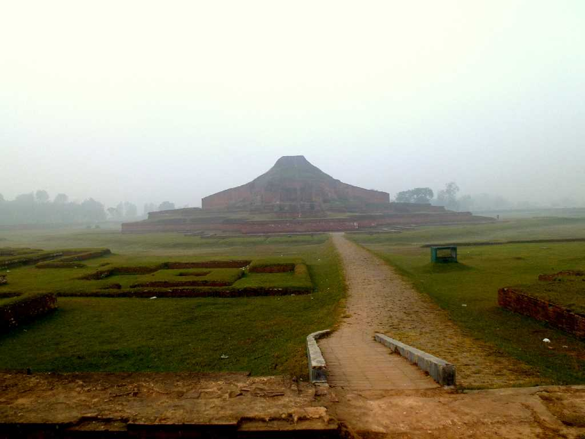
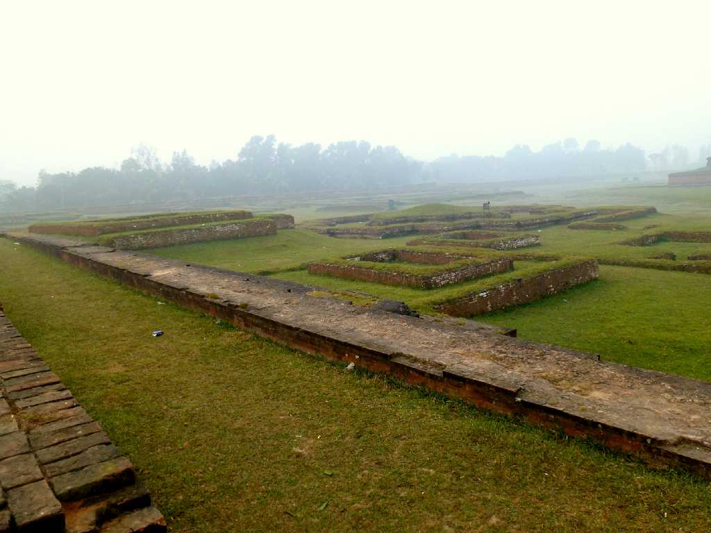
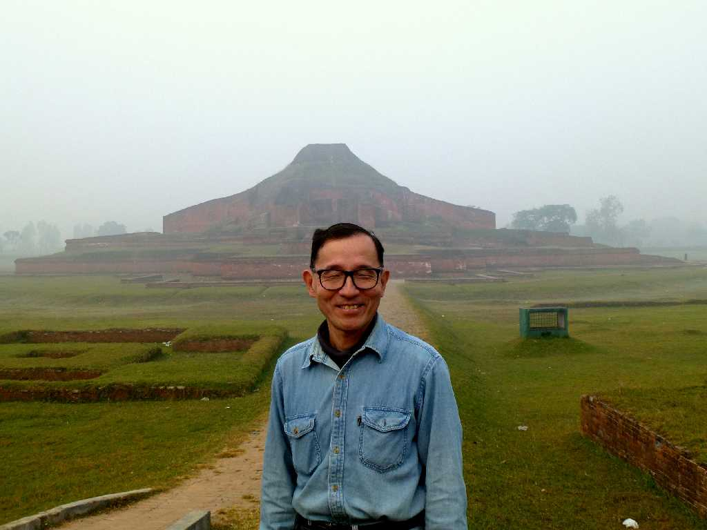
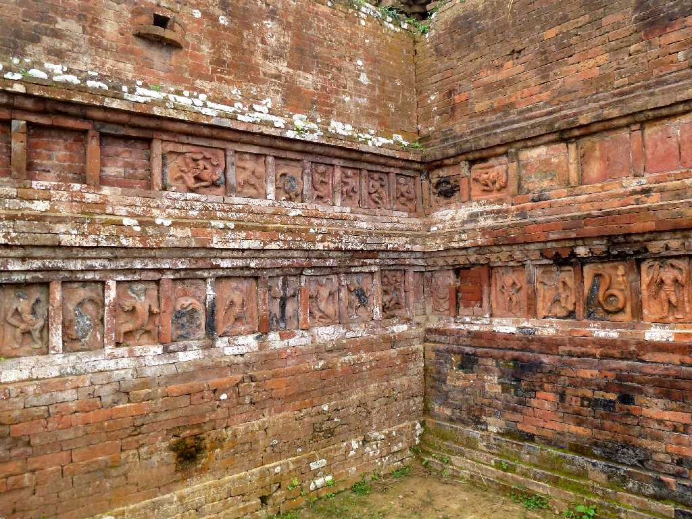

Shompur Bihar Paharpur
パハルプールはパーラ王朝の８世紀半ばから９世紀にかけて創られた仏教寺院群 パハルプールの建築様式は後のパガン遺跡やアンコール遺跡に多大な影響を与えたと云われている

Paharpur
パハルプールは１７７の僧院７２の台座と仏舎利塔が創建され千人の僧侶を収容した仏教寺院であった

December 14 2013 Paharpur
ベンガル語でパハルは山を意味しプールは中核を意味する

Terracotta Shompur Bihar Paharpur
壁面には約２,８００枚の素焼きレンガ像がはめ込まれ仏教やヒンズー教の神々や動物が描かれている